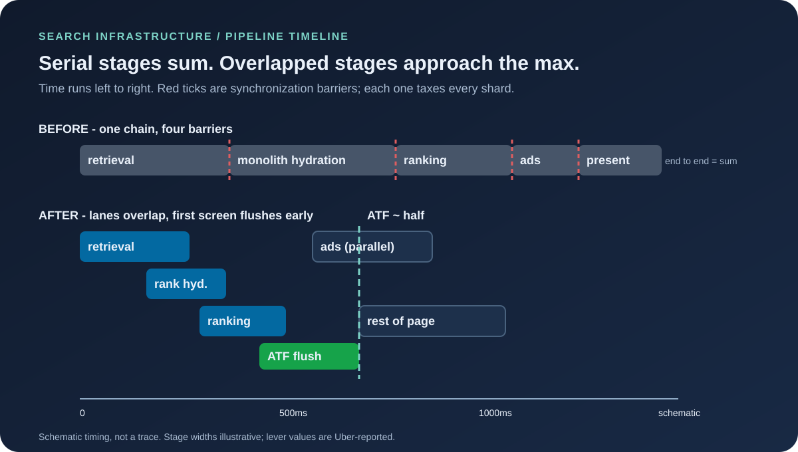
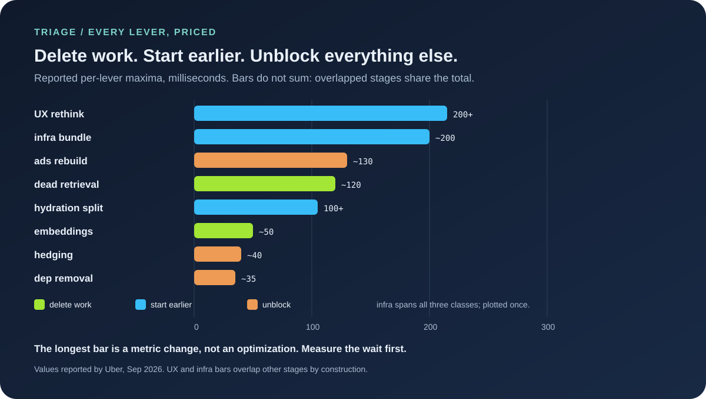

The wrong finish line
Every latency project begins by choosing what to measure, and most choose wrong. Uber Eats had been optimizing backend API response time — the moment the server finishes computing — while users waited through everything after it: payload transfer, template rendering, image loading. API latency can fall while the human sees nothing, which means the team can win every sprint and lose every session. The redefinition was the highest-leverage change in the whole program: Above-the-Fold completion, the time from query submission to the first screen rendered with images. One metric change, and suddenly the bottleneck map redrew itself around transfer, rendering, and pixels instead of query plans.
The lesson generalizes past search. Any pipeline measured at an intermediate boundary will optimize the part before the boundary and ignore the part the user pays for. If your dashboards stop where your service stops, your latency story ends one chapter early. Redefine the finish line first; the lever list falls out of the new map.
Anatomy of an accidental pipeline
Behind the metric sat a pipeline that had grown by accretion. Retrieval fetched tens of thousands of candidates across parallel precision/recall arms, then sent all of them through full hydration before ranking discarded most — paying the most expensive step for items nobody would ever see. Hydration itself was monolithic: one phase fetching ranking signals and display attributes together, so scoring waited on prices, promotions, and stock status it never uses. And the DAG wiring carried false dependencies — stages waiting on prior stages with no true data relationship, serializing work that could have run in parallel. Each decision had made sense in isolation; in aggregate they formed a pipeline doing too much work, waiting unnecessarily, and moving too much data through expensive stages.
This is the shape to memorize, because you will meet it everywhere: serial stages + full-fidelity handoffs + inherited dependencies. Its cost follows a small piece of pipeline arithmetic worth keeping. When stages run in strict sequence, end-to-end latency is the sum of stage times, and every stage pays the slowest shard's tax at each barrier. Overlap the stages and the total collapses toward the maximum and synchronization cost. The entire Uber program is that inequality applied repeatedly — every lever below either deletes a term from the sum or moves work off the critical path toward the max.
Barriers deserve one more line of math, because it explains why pipelines get slower as they scale. At each barrier, fast shards wait for the slowest, so the barrier's cost is the maximum of N shard latencies — and maxima grow with N. Double the shards and the expected slowest shard gets slower (logarithmically for well-behaved tails, worse for fat ones), which means every barrier taxes growth twice: more capacity, longer waits. Microbatching, the program's headline bet, attacks exactly this: let candidates flow downstream as they arrive and the barrier's max-of-N degrades toward a mean-of-N. That is a structural change in the scaling law, not a constant-factor tweak — the difference between a pipeline that gets relatively slower as it grows and one that doesn't.

Delete work: the 120ms nobody missed
The cheapest millisecond is the one you stop spending. Offline analysis and online experiments showed several broad-recall lexical retrieval strategies adding substantial latency while contributing almost nothing incremental — the relevant results they surfaced were already arriving through semantic retrieval and other arms. Removing those paths cut roughly 120ms with no measurable regression in conversion or result quality. Nothing was accelerated; half a dozen code paths simply stopped running.
The same instinct, applied to data access: product-level embeddings grouped items by shared product identity, collapsing lookups by more than 100× and cutting another 50ms while making the working set small enough to serve entirely from memory — with earlier chain-store deduplication shrinking everything downstream for free. Deletion compounds in a way acceleration cannot: removing a stage removes its latency, its variance, its failure modes, and its on-call burden in one edit. Ask "why are we computing this at all?" before asking how to compute it faster. The 120ms answer is what happens when the reply is "no reason."
Start earlier: split the hydration monolith
Where work cannot be deleted, it can start sooner. The hydration split is the cleanest example in the file: ranking hydration (signals for scoring) separated from presentation hydration (display attributes), fetched asynchronously, letting scoring begin while pixels assemble. Over 100ms fell off the critical path, and the architecture improved as a side effect — ranking and presentation data can now evolve independently instead of sharing one fate-coupled fetch. The same idea recurs in their forward plan: offline feature fetches currently run sequentially after realtime hydration before scoring; moving them parallel removes another barrier, and end-to-end microbatching generalizes the pattern so candidates flow downstream the moment they exist instead of waiting for whole stages to complete.
Staged, overlapping recovery is exactly what the queue drain calculator models — backlog clearing while new work arrives, rather than barriers between phases. The pipeline lesson and the recovery lesson are one lesson: waiting is a design choice, and barriers are where tail latency is manufactured. Microbatching's promise (over 100ms, lower variance) is really a promise to stop manufacturing it.
Unblock: false dependencies and the 40ms hedge
The dependency audit found stages waiting on completions they never consumed — pure serialization debt, accumulated one harmless-looking edge at a time. Parallelizing item ranking with hydration saved about 35ms; decoupling store ranking from live item signals targets another 20ms. Then the tail problem: hydration latency driven not by correlated slowdowns but by isolated shard jitter — the single best case for request hedging. Duplicate the slow request to another instance, take the faster answer, and aggregate hydration falls 40ms. Hedging is often dismissed as wasteful duplication; here the math favored it because jitter was independent across shards. Know your jitter's correlation structure before judging the technique — correlated stalls make hedging pure cost, isolated ones make it nearly free.
The independence point carries a compact probability lesson. Suppose a fraction p of shard requests exceed the hedge threshold. With independent jitter, both the original and the hedge exceed it only with probability ~p² — so even sluggish shards at p = 20% leave just ~4% of requests slow after hedging, a fivefold tail cut for the price of one duplicate in five. If instead one slow dependency stalls every shard at once (p correlated), the duplicate waits behind the same stall and hedging buys nothing while doubling load. Uber's 40ms tells you which regime they measured. Before copying the technique, measure yours: scatter shard latencies against each other, and only hedge what refuses to correlate.

The other 330ms: ads layouts and unglamorous infrastructure
Ads had a data-layout problem wearing a latency costume. Hundreds of bids per query, each with many scoring components, stored row-oriented with metadata repeated per bid — serialization tax on every request. The columnar rebuild matched layout to access pattern, moved campaign and pacing data into application memory (no DB call), and deleted redundant serialize/deserialize cycles and unused scoring fields: ~30ms selection, ~110ms bid prep, ~20ms conversions, roughly 160ms total (Uber-reported lever figures; not additive with other levers). Layout follows access; access had moved on years earlier.
The layout win repays a few seconds of arithmetic, because it shows why row-oriented stores rot. Picture 300 bids with 20 scoring components each: row layout pays the component metadata 300 times (300 × (metadata + values)), while columnar pays it once (metadata + 300 × values). As bid counts grew, the metadata share of every payload grew with them — a tax proportional to success, levied in serialization CPU and bytes on the wire. Any reader with a repeated-metadata schema can run the same estimate tonight: count the metadata bytes per row, multiply by row count, and compare against the payload that actually varies. If the fixed header dwarfs the varying body, you are holding Uber's ads problem in miniature.
The remaining ~200ms came from profiling, not architecture: chunked parallel encode/decode (50ms+, idle cores put to work), embeddings trimmed to 5 decimals with varint encoding (46% smaller, halved DB latency), a service-mesh connection cap silently queueing high-throughput services (multiple connections, up to 53% off — a fixed in-flight ceiling with bursty arrivals is a queue by Little's law, yet it emits no errors, only latency, so every dashboard stays green while the tail grows), and Go pointer-heavy models converted to value types after finding GC eating over 40% of CPU in some services. That last line deserves a pause: a collector tax above 40% is the pacing-rule fingerprint from the Zomato teardown — ceiling-blind collection, second company, same shape. Different fix here (fewer heap allocations rather than a soft limit), same diagnosis. And a warning with the mesh fix: a fixed in-flight cap that queues instead of failing is a hidden barrier; audit yours before it becomes someone's 53%.
The loop that found the boring wins
The strangest workstream was an agentic coding loop given a latency target and production-profile tools: pull profiles, rank bottlenecks by span, draft fixes, open PRs, benchmark before merging, repeat until the target or diminishing returns. It excelled at wins too small for roadmaps — blocking metric emits, config fetches inside the query loop, hot-path allocations driving GC pauses. An LLM-assisted eval framework guarded quality, collapsing the validation bottleneck that normally makes such loops too slow to run.
Two honest caveats before anyone copies it. First, Uber never splits out the loop's standalone contribution, so its share of the half is unquantified — treat the agent as an accelerator of the program, not a lever with a millisecond price. Second, the loop's real innovation is arguably the eval harness, not the code generation: fast, trusted quality gates are what convert a demo into a compounding loop. Most teams asking "should we try agents for perf?" should first ask whether their benchmarks run fast enough to close the loop at all.
The verdict: half proven, half promised
What the disclosure proved is a method, not just a number: redefine the metric to the user's wait, then triage every stage into delete, start-earlier, or unblock — with per-lever measurements before merging anything. The 50% is real on the ATF metric they defined, backed by named mechanisms and an InfoQ-seconded account. What remains open is everything labeled future: microbatching's estimated 100ms+, product-based retrieval's early 50%+ p99 (testing, not production), Zero Pass Ranking's 30-to-50ms vision, multipart streaming. Early-test numbers are not production numbers, and the piece is careful to keep them in the "bets" column.
The deepest lesson is the one Figure 2 exists to teach: lever maxima do not sum, because pipelines overlap. Anyone adding 120+50+100+35+40+130+200 and expecting 675ms misunderstands the system they are optimizing. Serial sums; overlapped tends to the max. The program's genius is that nearly every lever either deleted a term or moved work off the sum — which is why the total halved while no single change dominated.
Delete work. Start earlier. Unblock everything else.
Sources and Method
Pipeline design, per-lever figures, metric definition, agentic loop, and forward bets come from Uber Engineering's September 2026 post by Nimish Sheth, Daniel Cai, Saurabh Kathpalia and team; all millisecond figures are Uber-reported. Retrieval backstory follows their April 2026 delivery-search-platform post. InfoQ's October 2026 coverage is used for corroboration only. The pipeline inequality and triage framing are this article's synthesis, not Uber's claims. "Acrylic" in the original's DAG expansion is left unrepeated.